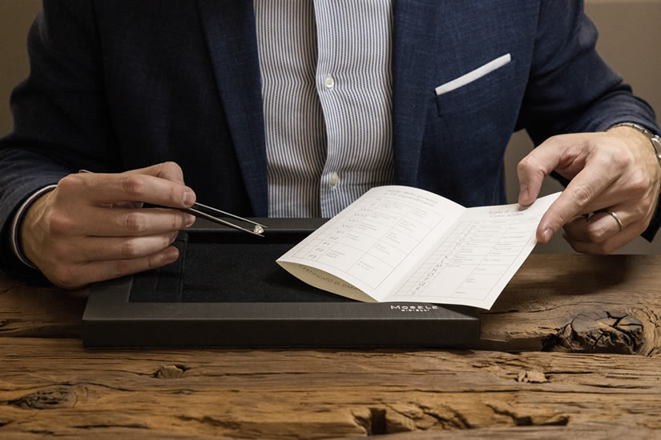
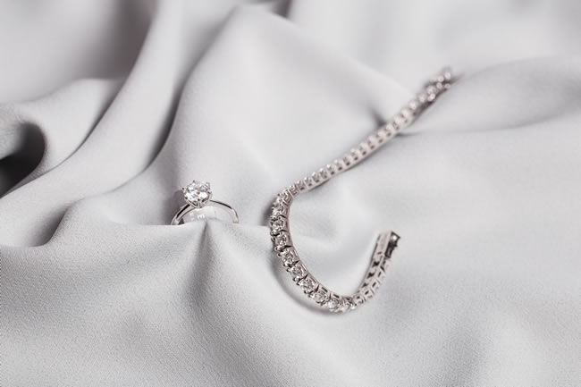
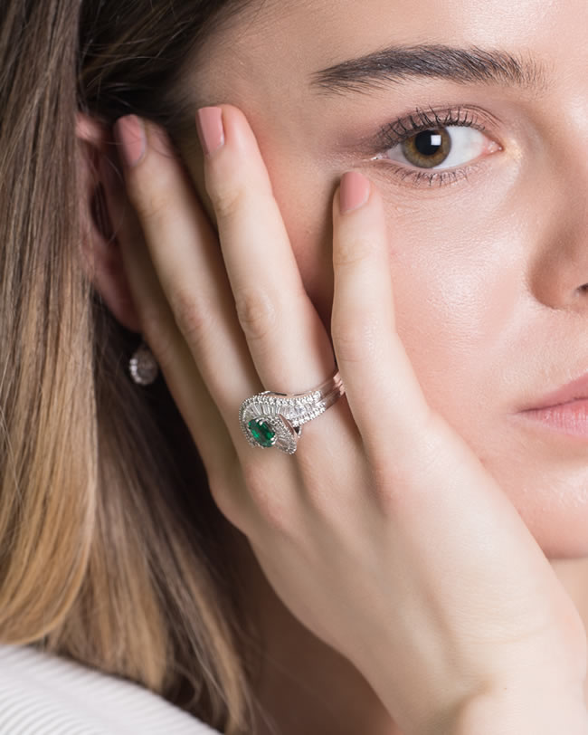
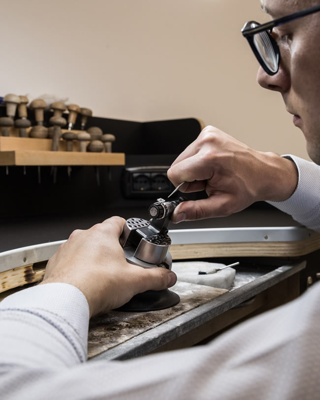

Trento
Via Oss Mazzurana 49, 38122 Trento
Trento · Bolzano · Asiago
Serietà, passione e una particolare attenzione alle esigenze del cliente sono i valori che diamo al nostro lavoro. La nostra ambizione è rendere il servizio sempre più esclusivo, con il cliente al centro delle nostre attenzioni.

Diamanti
Nei nostri negozi di Trento, Bolzano e Asiago, e nel nostro laboratorio.





Tre negozi, la stessa famiglia.
Via Oss Mazzurana 49, 38122 Trento
Piazza Walther 19, 39100 Bolzano
Corso IV Novembre 44, 36012 Asiago
Damiani, Pasquale Bruni, Mirco Visconti, Girard-Perregaux, Eberhard & Co., Hamilton, Tissot, Pesavento, Le Favole e le altre.
Per qualsiasi informazione scrivici o chiamaci: ti rispondiamo il prima possibile.